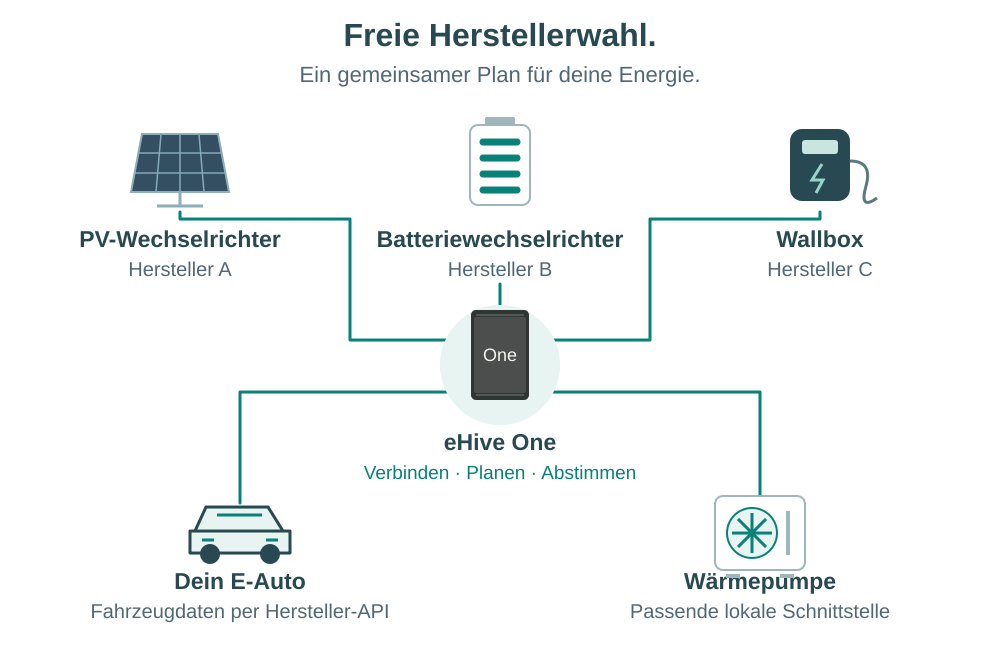
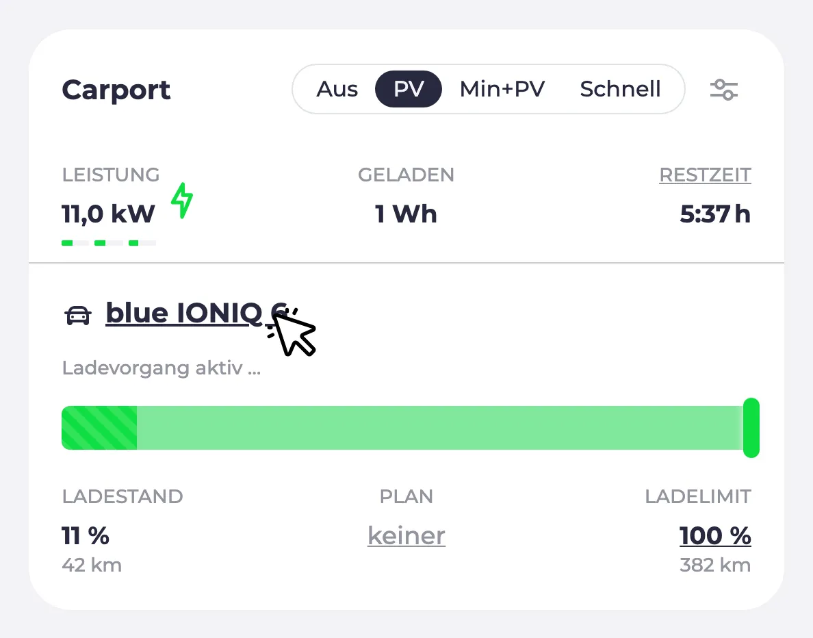
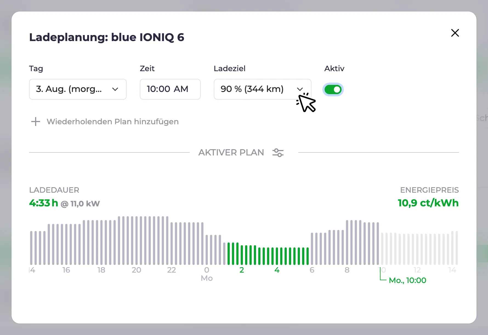
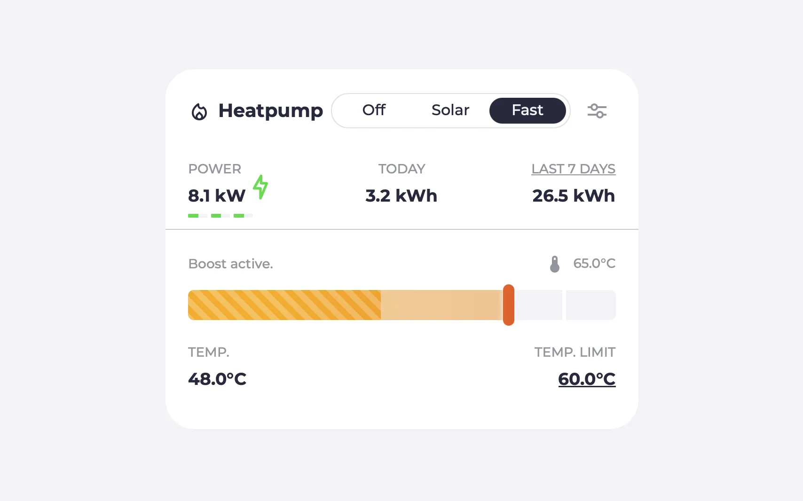
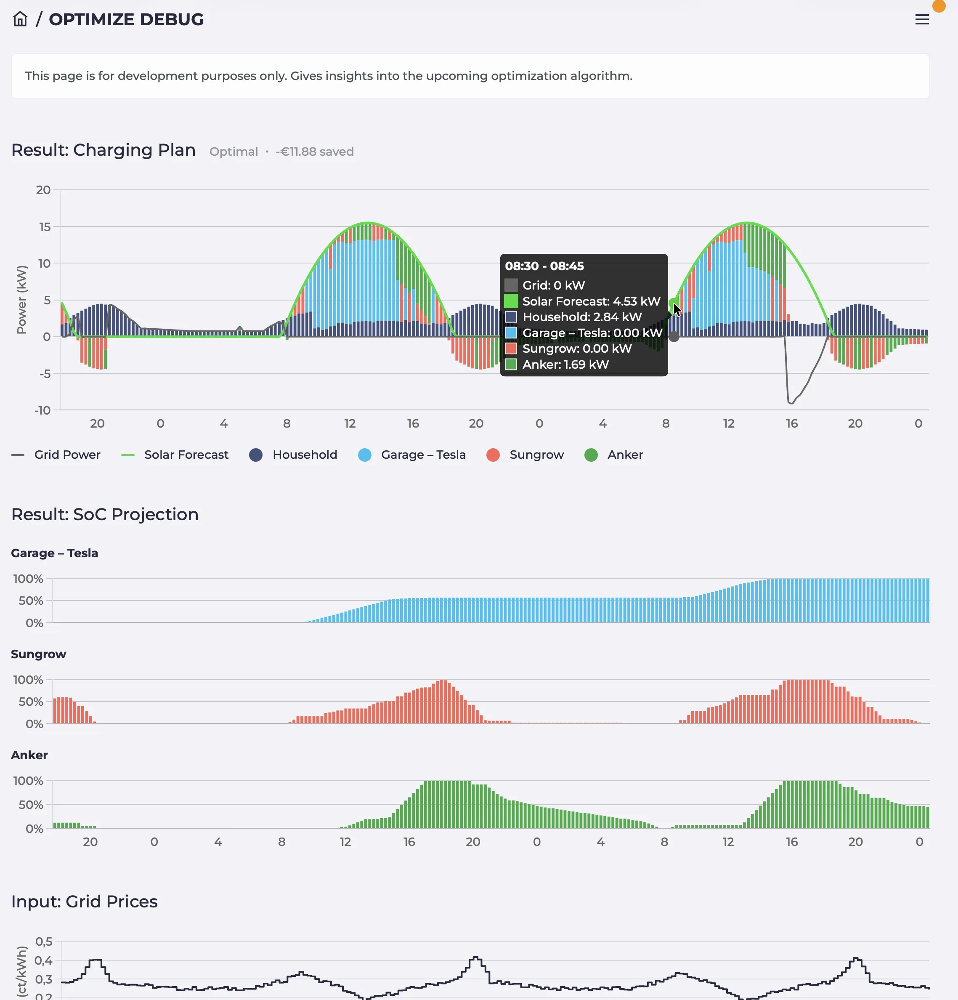

Ein HEMS, das zu deiner Anlage passt
Ein Home Energy Management System (HEMS) verbindet Erzeugung, Speicher und Verbrauch im Haus. Entscheidend ist dabei, wie gut die einzelnen Geräte zusammenarbeiten. Bei einem geschlossenen Herstellersystem bestimmt häufig das jeweilige Ökosystem, welche Kombinationen möglich sind. Unser Ansatz bei eHive ist die freie Wahl: Du stellst deine Anlage nach deinen Anforderungen zusammen, wir verbinden die unterstützten Geräte zu einem gemeinsamen Energiesystem.
Ein PV-Wechselrichter von Hersteller A, ein reiner Batteriewechselrichter von Hersteller B und eine Wallbox von Hersteller C? Genau solche Kombinationen machen wir möglich. Du musst für das Zusammenspiel nicht bei einer Marke bleiben. Maßgeblich sind die verfügbaren Schnittstellen und die Kompatibilität des jeweiligen Modells.
Dein E-Auto wird Teil der Energieplanung
Dein Auto ist einer der größten flexiblen Stromverbraucher im Haushalt. Deshalb beziehen wir bei unterstützten Fahrzeugen über die API des Fahrzeugherstellers verfügbare Informationen wie Ladestand und Reichweite ein. So betrachten wir die Fahrzeugbatterie als eingeplanten Energiespeicher im Gesamtsystem: Wir berücksichtigen, wie viel Energie bereits vorhanden ist und wie viel du für deine nächsten Fahrten brauchst.
Das macht im Alltag einen Unterschied. Nach einer kurzen Pendelstrecke musst du weniger nachladen als nach einem langen Ausflug. Der veränderte Ladestand bildet diesen Bedarf ab. Zusammen mit deinem Ladeziel und deiner geplanten Abfahrt kann die Ladeplanung darauf reagieren. Die täglich gefahrenen Kilometer wirken sich damit über den tatsächlichen Energiebedarf auf die Planung aus, statt jeden Tag dieselbe Energiemenge anzusetzen.
Dein Vorteil: Mobilität und Energieverbrauch werden gemeinsam betrachtet. Dein Auto soll zur gewünschten Zeit bereit sein und dabei passende Solar- oder günstige Netzstromzeiten nutzen.
Die Einbindung als Energiespeicher in die Planung bedeutet noch keine Stromversorgung des Hauses aus dem Auto. Für echtes bidirektionales Laden (Vehicle-to-Home) müssen Fahrzeug, Ladeeinrichtung und Installation die Rückspeisung ausdrücklich unterstützen. Hersteller-APIs benötigen zudem eine erreichbare Herstellerschnittstelle und in der Regel Internet.


Wärmepumpe lokal anbinden und Installationsaufwand sparen
Bei Wärmepumpen setzen wir auf die passende lokale Schnittstelle des jeweiligen Herstellers und Modells. Dafür nutzen wir flexibel Modbus TCP, Modbus RTU, MQTT, HTTP oder EEBUS. So lässt sich eine kompatible Wärmepumpe direkt in das Energiemanagement einbinden.
Ist eine geeignete Netzwerkschnittstelle bereits vorhanden, können zusätzliche SG-Ready-Steuerleitungen und separate Schaltrelais entfallen. Das spart Verkabelung und Hardwareaufwand. Modbus RTU benötigt dagegen eine passende Busverbindung; je nach Gerät kann auch ein Schnittstellenmodul erforderlich sein.
Je nach Anbindung können neben Steuersignalen auch Betriebsdaten zurückgemeldet werden. Das schafft mehr Einblick in das Zusammenspiel von Wärmebedarf und Stromangebot. Die eigene Regelung der Wärmepumpe bleibt dabei für den sicheren und passenden Heizbetrieb zuständig.

Neu: Lastmanagement direkt im HEMS
Wir integrieren das Lastmanagement direkt in unser HEMS. Eine separate Lastmanagement-Zentrale brauchst du dafür bei einer passend angebundenen Anlage nicht. Vorhandene geeignete Messwerte und steuerbare Ladepunkte können gemeinsam genutzt werden.
Wenn Auto, Wärmepumpe und Haushalt gleichzeitig Strom brauchen, wird die Ladeleistung innerhalb der eingerichteten Grenzen verteilt. So lassen sich Lastspitzen durch das Laden begrenzen und die verfügbare Anschlussleistung besser nutzen. Voraussetzung sind passende Messdaten, korrekt konfigurierte Stromkreisgrenzen und steuerbare Geräte. Das integrierte Lastmanagement ersetzt keine elektrischen Schutzeinrichtungen. evcc führt diese Funktion derzeit noch als experimentell; die konkrete Gerätekombination muss deshalb bei der Einrichtung geprüft werden.
Smart laden und die Hausbatterie gezielt einsetzen
Die Verbindung verschiedener Hersteller eröffnet dir mehr Möglichkeiten im Alltag:
- Smartes Laden: Nutze PV-Überschüsse und passende Strompreiszeiten für dein Auto.
- Lastspitzen kappen: Passe die Ladeleistung an die verfügbare Leistung im Haus an.
- Hausbatterie beim schnellen Autoladen schonen: Bei unterstützten Batteriesystemen kann eine Entladesperre verhindern, dass sich der Hausspeicher beim Laden des Autos mit hoher Leistung leert. So bleibt Energie für den späteren Hausverbrauch verfügbar.
- Gezielt aus dem Netz laden: Unterstützte Speicher und Fahrzeuge können günstige Netzstromzeiten nutzen, soweit Anschlussbedingungen, örtliche Netzvorgaben und die jeweilige Anlage es zulassen.
Der Optimizer: vorausschauend planen, mehr Möglichkeiten nutzen
Besonders spannend ist der Optimizer von evcc, auf dem unser Energiemanagement aufbaut. Er erweitert den Blick auf die kommenden Stunden: Wann ist Energie verfügbar, wann wird sie gebraucht und welche Verteilung ist voraussichtlich günstig? Dadurch werden Zusammenhänge sichtbar, die bei einzelnen, voneinander getrennten Geräten leicht untergehen.
Sein großer Vorteil ist die gemeinsame Betrachtung deiner Anlage. Bei eHive bieten wir diesen Ansatz herstellerübergreifend für die unterstützten Integrationen an. Ein bestimmter Wechselrichter, eine bestimmte Wallbox oder eine Batterie derselben Marke ist dafür keine Voraussetzung. Du kannst kompatible Bestandstechnik weiterverwenden und dein System später gezielt erweitern.
Der Optimizer wird laufend weiterentwickelt. Die aktuelle evcc-Dokumentation beschreibt ihn noch als experimentelle Prognose- und Planungshilfe; daraus folgt keine pauschale Zusage einer vollständig automatischen Steuerung. Welche Aktionen verfügbar sind, hängt vom eingesetzten Softwarestand und deinen Geräten ab.

Mehr Freiheit für dein Zuhause
Du entscheidest, welche Geräte zu deinem Haus passen. Wir bringen die unterstützten Hersteller zusammen: mit eingeplanter Fahrzeugbatterie, lokalen Wärmepumpenschnittstellen, integriertem Lastmanagement und einer vorausschauenden Sicht auf deine Energie. Das macht deine Anlage flexibler – heute und bei der nächsten Erweiterung.
Welche Kombination passt zu dir? In unserer Kompatibilitätsübersicht kannst du deine Geräte prüfen.